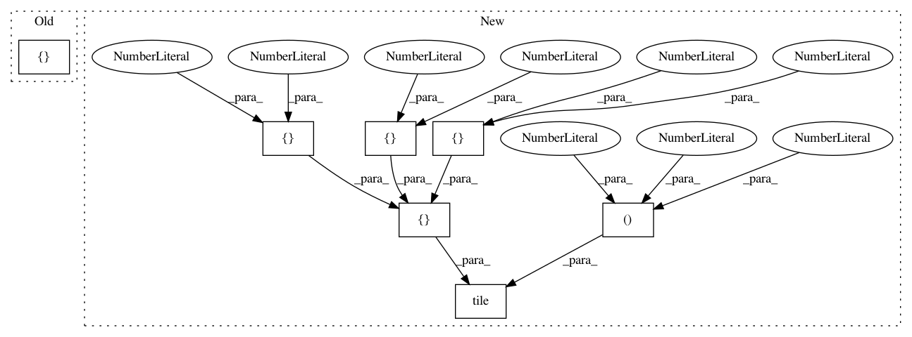

65cce49dcac95a195c1c3cb2283a4f4dbda981ec,deslib/tests/des/test_knop.py,,test_fit,#,57
Before Change
def test_fit():
knop_test = KNOP(create_pool_classifiers())
knop_test.fit(X_dsel_ex1, y_dsel_ex1)
expected_scores = np.ones((15, 6)) * np.array([0.5, 0.5, 1.0, 0.0, 0.33, 0.67])
assert np.array_equal(expected_scores, knop_test.dsel_scores)
// Assert the roc_algorithm is fitted to the scores (decision space) rather than the features (feature space)
assert np.array_equal(knop_test.roc_algorithm._fit_X, knop_test.dsel_scores)
After Change
def test_fit():
knop_test = KNOP(create_pool_classifiers())
knop_test.fit(X_dsel_ex1, y_dsel_ex1)
expected_scores = np.array([[0.5, 0.5], [1.0, 0.0], [0.33, 0.67]])
expected_scores = np.tile(expected_scores, (15, 1, 1))
assert np.array_equal(expected_scores, knop_test.dsel_scores)
// Assert the roc_algorithm is fitted to the scores (decision space) rather than the features (feature space)
In pattern: SUPERPATTERN
Frequency: 3
Non-data size: 7
Instances
Project Name: scikit-learn-contrib/DESlib
Commit Name: 65cce49dcac95a195c1c3cb2283a4f4dbda981ec
Time: 2018-03-25
Author: rafaelmenelau@gmail.com
File Name: deslib/tests/des/test_knop.py
Class Name:
Method Name: test_fit
Project Name: scikit-learn-contrib/DESlib
Commit Name: 65cce49dcac95a195c1c3cb2283a4f4dbda981ec
Time: 2018-03-25
Author: rafaelmenelau@gmail.com
File Name: deslib/tests/test_base.py
Class Name:
Method Name: test_preprocess_dsel_scores
Project Name: scikit-learn-contrib/DESlib
Commit Name: 65cce49dcac95a195c1c3cb2283a4f4dbda981ec
Time: 2018-03-25
Author: rafaelmenelau@gmail.com
File Name: deslib/tests/examples_test.py
Class Name:
Method Name: